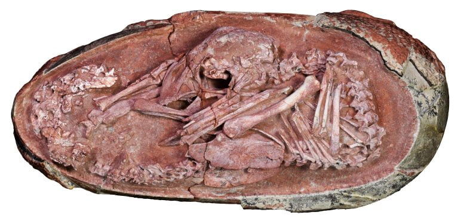

အခု ရှာတွေ့တဲ့ ကျောက်ဖြစ်ရုပ်ကြွင်းရဲ့ သက်တမ်းဟာ လွန်ခဲ့တဲ့ နှစ်သန်း ၆၆ သန်းနဲ့ ၇၂ သန်းကြားက ဖြစ်မယ်လို့ ဆိုပါတယ်။ ဒီ ဒိုင်နိုဆော ဥ ရဲ့ အတွင်းက အကောင်းပကတိ ရှိတဲ့ သန္ဓေသား ကျောက်ဖြစ်ရုပ်ကြွင်းဟာ ရှေးခေတ် ဒိုင်နိုဆော တွေနဲ့ သူတို့က ဆင်းသက်လာတဲ့ ခုခေတ် ငှက်တွေ ကြားက ကွင်းဆက်ကို ဖေါ်ထုတ်ဖို့ အရေးပါတဲ့ တွေ့ရှိချက် ဖြစ်တယ်လို့ ဆိုပါတယ်။
အခု ကျောက်ဖြစ်ရုပ်ကြွင်းကို တရုတ်ပြည် ကန်ကျို့ ပြည်နယ်မှာ ရှာဖွေ တွေ့ရှိခဲ့တာ ဖြစ်ပါတယ်။ သူ့ကို တွေ့ရှိခဲ့တဲ့ ကျောက်လွှာတွေဟာ ခရီတေးရှပ် ခေတ်နှောင်းပိုင်း ကာလ (Late Cretaceous period) က အနည်ကျခဲ့တဲ့ ကျောက်သားတွေ ထဲမှာ ဖြစ်ပါတယ်။
ဒီ ဒိုင်နိုဆောဟာ သွားမပါတဲ့ သီရိုပေါ့တ် ဒိုင်နိုဆော (theropod dinosaur) အုပ်စုဝင် ဖြစ်ပြီး ဒီ ဒိုင်နိုဆော မျိုးကနေ ငှက်တွေ ပေါက်ဖွားလာတယ်လို့ သိပ္ပံ ပညာရှင် တွေက ယူဆနေ ကြတာပါ။ အခု ဒိုင်ဆိုဆော ဥက သန္ဓေသားရဲ့ ကိုယ်ဟန် အနေအထာကလဲ ငှက်ကလေး တကောင် ဥထဲမှာ ကွေးနေပုံနဲ့ အတော်လေး တူနေပါတယ်။
အခု တွေ့တဲ့ ဒိုင်နိုဆောကို Baby Yingliang လို့ အမည်ပေးထားပါတယ်။ သူ့ရဲ့ ဥထဲမှာ ကွေးနေပုံလေးဟာ အရင်က တွေ့ဖူးခဲ့သမျှ ဒိုင်နိုဆော ဥတွေထဲမှာ သားလောင်းတွေ ကွေးနေပုံနဲ့ ကွာခြား နေပါတယ်။ အခု ဒိုင်နိုဆော လေးဟာ ဦးခေါင်းကို ကိုယ်အောက်ရောက်အောင် ကွေးထားပြီး ခြေထောက် နှစ်ချောင်းကလဲ ခေါင်းရဲ့ တဖက်တချက်မှာ ရောက်နေပါတယ်။ ကျောကလဲ ဥခွံကွေးတဲ့အတိုင်း ကွေးကွေးလေး ဖြစ်နေပါတယ်။ ဒီပုံစံဟာ အခြား ဒိုင်နိုဆော ဥတွေနဲ့ မတူပဲ ခုခေတ် ငှက်လေးတွေ ငှက်ဥထဲ ကွေးနေပုံနဲ့ သွားတူနေပါတယ်။
အခုခေတ် ငှက်တွေမှာ ဒီလို ပုံစံမျိုး ဖြစ်အောင် ဗဟို အာရုံကြော အဖွဲ့အစည်း (central nervous system) က ထိန်းချုပ်ပေးထားတာပါ။ ဒီပုံစံ ကိုယ်နေဟန်ဟာ ငှက်ကလေးတွေ ဥကနေ အောင်အောင်မြင်မြင် အကောင် ပေါက်နိုင်ဖို့ အရေးကြီးတဲ့ ကိုယ်နေဟန် ဖြစ်ပါတယ်။
အခု ဥ နဲ့ အတွင်းက သားလောင်းကို လေ့လာပြီးတဲ့နောက် သိပ္ပံ ပညာရှင် တွေက ခုခေတ် ငှက်တွေရဲ့ ဥတွင်း အနေအထားဟာ theropods ဒိုင်နိုဆောလို ပျံသန်းနိုင်ခြင်း မရှိတဲ့ ဒိုင်နိုဆော တွေကနေ စတင်ဖြစ်ပေါ် လာနိုင်တယ်လို့ ကောက်ချက် ချခဲ့ပါတယ်။
အခု သုတေသနကို UK နိုင်ငံ ဘာမင်ဟန် တက္ကသိုလ် (University of Birmingham) နဲ့ တရုတ်နိုင်ငံဘီဂျင်းမြို့က ဘူမိသိပ္ပံ တက္ကသိုလ် (China University of Geosciences (Beijing)) တို့က ပညာရှင်တွေ ပူးပေါင်း ပြုလုပ်ခဲ့တာ ဖြစ်ပါတယ်။ ဒီ သုတေသနမှာ တရုတ်၊ ယူကေ နဲ့ ကနေဒါ နိုင်ငံတို့က သုတေသီတွေ ပါဝင်ပါတယ်။
သုတေသီ တွေက သူတို့ရဲ့ တွေ့ရှိချက်ကို iScience သုတေသန ဂျာနယ်မှာ တင်ပြခဲ့တာ ဖြစ်ပါတယ်။

ဒီ သုတေသနမှာ ပါဝင်တဲ့ ဘာမင်ဟန် တက္ကသိုလ်က သုတေသီ ဖီယွန် ဝေဆမ် မာ (Fion Waisum Ma) က အခုလို ပြောပါတယ်။
“ဒိုင်နိုဆော ဥ ကျောက်ဖြစ်ရုပ်ကြွင်းတွေဟာ အလွန် ရှားပါတယ်။ တွေ့သမျှ ကလဲအပြည့်အစုံ မဟုတ်ကျပဲ အရိုးတွေ ပြုတ်ထွက် နေကြတာ များပါတယ်။ အခု ကျောက်ဖြစ်ရုပ်ကြွင်း ဥလေး ရှာတွေ့တယ် ဆိုတော့ ကျွန်မတို့ အရမ်းကို စိတ်လှုပ်ရှားသွား ကြတာပါ။ သူ့ထဲက ရုပ်ကြွင်းက အကောင်းပကတိ အတိုင်း ရှိနေတော့ ဒိုင်နိုဆော ရဲ့ ဖွံ့ဖြိုးကြီးထွားမှုနဲ့ မျိုးပွားမှုနဲ့ ပတ်သက်တဲ့ မေးခွန်းတွေ အများကြီး အတွက် အဖြေထုတ်ပေးနိုင် ခဲ့ပါတယ်။”
“အခု ဒိုင်နိုဆော သားလောင်းလေး ကွေးနေပုံနဲ ကြက်သားလောင်းလေး ကွေးနေပုံ တူနေတာ တွေ့ရတာ အတော့်ကို စိတ်ဝင်စားစရာ ကောင်းပါတယ်။ ဒါက ဘာပြနေလဲ ဆိုတော့ ဒီ ဒိုင်နိုဆော မျိုးစိတ်တွေဟာ ဥပေါက်ခါနီးမှာ ငှက်တွေလိုပဲ ပြုမူကြတယ်လို့ ဆိုနေတာပါ။”
ငှက်တွေ ဥမပေါက်မီ ကိုယ်ကို ကွေးပြီး ခေါင်းကို သူတို့ အတောက်အောက်မှာ ကွေးထားကြပါတယ်။ အကယ်လို့ ဒီလိုပုံစံ မကွေးနိုင်တဲ့ ငှက်သားလောင်းဟာ ဥကနေ ပေါက်နိုင်စွမ်း မရှိပါဘူး။
အခု ဒိုင်နိုဆော ဥကလေးမှာ တွေ့ရတဲ့ ကွေးနေတဲ့ ပုံကို အခြား ဒိုင်နိုဆော ဥတွေ မှာ တွေ့ရတဲ့ ပုံနဲ့လဲ နှိုင်းယှဉ်ကြည့်ခဲ့ ကြပါတယ်။ ဒီလို နှိုင်းယှဉ်ကြည့်လို့ ရလာတဲ့ တွေ့ရှိချက် တွေအရ ငှက်တွေမှာ ဖြစ်တဲ့ မွေးခါနီး ကိုယ်နေဟန်ဟာ ဒီ theropod ဒိုင်နိုဆောတွေ ဆီမှာ လွန်ခဲ့တဲ့ နှစ်သန်းပေါင်း များစွာကတဲက စတင် ဖြစ်ထွန်း ခဲ့တယ်လို့ ဆိုပါတယ်။ ဒီ သီအိုရီကို အတည်ပြုဖို့ ကတော့ နောက်ထပ် အလားတူ ဒိုင်နိုဆော ဥတွေ ထပ်တွေ့ဖို့ လိုပါလိမ့်မယ်။
အခုဥကို ယင်းလန်း သဘာဝ ကျောက်သမိုင်း ပြတိုက် ဒါရိုက်တာက လွန်ခဲ့တဲ့ ၂၀၀၀ ပြည့်နှစ် ဝန်းကျင် ကတဲက ဝယ်ယူထားခဲ့ တာပါ။ ဒါပေမယ့် သိမ်းဆည်းထားရာက ၂၀၁၀ မှာ ပြတိုက် ပြန်ပြင်ဆောက်မယ် ဆိုတော့ ပစ္စည်းတွေ ရွှေ့ပြောင်းတော့မှ ပြတိုက် ဝန်ထမ်းတွေက သတိထားမိ ကြတာပါ။
ကျွမ်းကျင် ပညာရှင်တွေကို ခေါ်ပြတော့ ဒါတွေဟာ ဒိုင်နိုဆော ဥတွေ ဆိုတာကို အတည် ပြုပေးခဲ့ပါတယ်။ ဆက်လက် သုတေသန ပြုချက်တွေအရ အထဲက ကျောက်ဖြစ်ရုပ်ကြွင်း ဖြစ်နေတဲ့ သန္ဓေသားကို ထုတ်ယူနိုင် ခဲ့ကြပါတယ်။
ဒီ သုတေသနမှာ ဦးဆောင်သူ အနေနဲ့ ပါဝင်တဲ့ ဘာမင်ဟန် တက္ကသိုလ်က ပါမောက္ခ စတိဗ် ဘရူဆတ် (Professor Steve Brusatte) ကတော့ ဒီ ကျောက်ဖြစ်ရုပ်ကြွင်း ဥဟာ တွေ့ဖူးသမျှ ဒိုင်နိုဆော ဥတွေ ထဲမှာ အလှဆုံး ပါပဲ လို့ ပြောကြား သွားခဲ့ပါတယ်။
Reference: Exquisitely Preserved Dinosaur Embryo Found Inside Fossilized Oviraptorosaur Egg | SciTech Daily